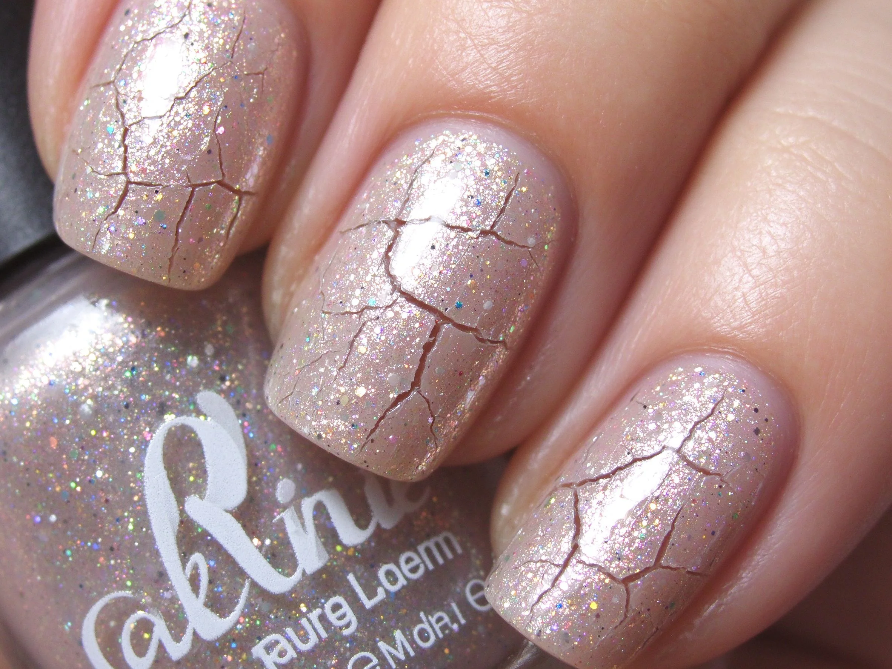

美甲爆裂紋是什麼？入門入門攻略
爆裂紋是用專用的爆裂膠或貼膜，讓甲面自然裂開一塊一塊的龜裂紋，個性又快速。
爆裂紋原理與辨識重點：美甲師不說的上層收縮裂開
爆裂膠是一種會『收縮』的特殊膠，塗在底色上照燈後，上層會自己收縮裂開，把下面的底色露出來，形成像鱷魚皮、乾裂土地那樣的紋路。另一種是『爆裂貼膜』，貼上去撕開就留下隨機裂紋，更簡單。裂紋越不規則越自然，刻意畫的反而假。
誰適合做爆裂紋？個性款對號入座
想做搖滾風、龐克風、個性款的人；歐美客人很愛，東亞客人比較常在秋冬看到。
爆裂紋美甲施作步驟：爆裂膠／貼膜
上好底色照燈 → 均勻塗一層爆裂膠 → 照燈或等它自然乾 → 觀察裂紋成型 → 上封層保護 → 若用貼膜則撕開後直接封層。
爆裂紋優缺點分析：美甲持久度與傷甲評估
| 優點 | 說明 |
|---|---|
| 十分鐘就能做出設計感，裂紋每一次都不一樣，隨機卻自然。 | 是歐美流派的招牌，入門就能上手 |
| 缺點 | 說明 |
| 圖案不好控制，想要『精緻小圖案』的客人不適合；顏色搭錯會顯髒。 | 前置與爆裂膠要『均勻薄塗』，太厚裂紋會大塊大塊、像蛇皮；太薄又裂不出來。第一次做建議在甲片上先試裂紋大小。沒顧好會打折 |

爆裂紋新手雷區：底色透出與常見錯誤
注意：爆裂膠要『均勻薄塗』，太厚裂紋會大塊大塊、像蛇皮；太薄又裂不出來。第一次做建議在甲片上先試裂紋大小。
爆裂紋和其他美甲做法的差別比較
常跟深色底＋金色裂紋搭（黑底裂金箔紋），或跟動物紋、鉚釘一起做哥德風；不建議搭裸色、甜美款，會很衝突。
爆裂紋美甲常見問題 FAQ
Q：裂紋可以控制大小嗎？ A：大致上看膠的厚度和塗佈速度，無法精準指定。要大塊紋就厚一點、小塊紋就薄一點，隨機是它的魅力。
Q：做完要封層嗎？ A：一定要。裂紋縫隙容易卡髒汙和油，不封層一下就灰掉了，封層也要夠厚才平滑。